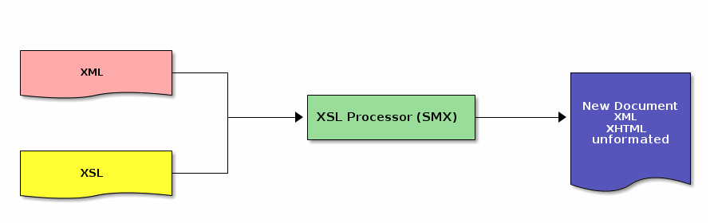
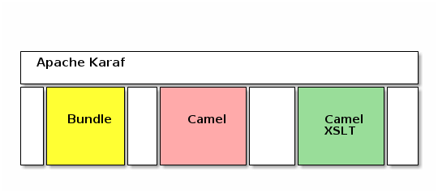
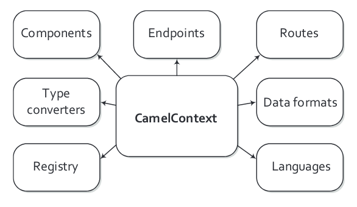
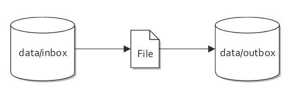
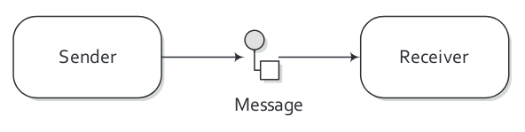
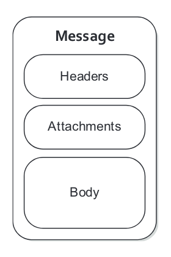
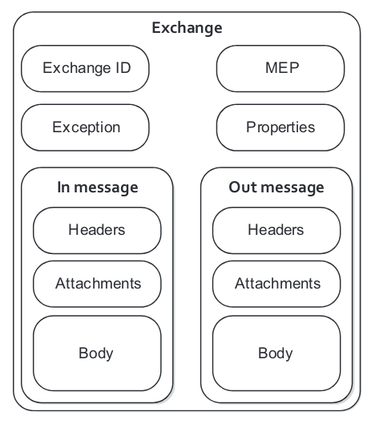
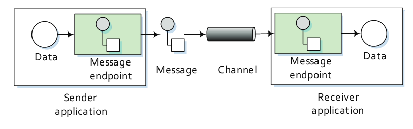
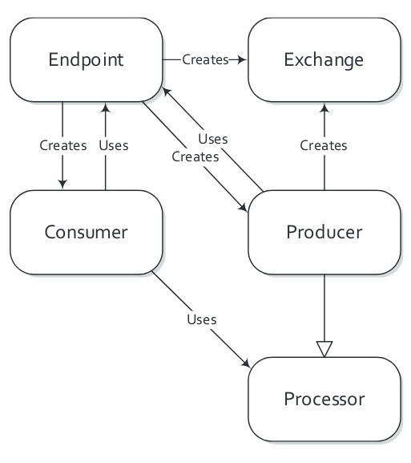

Created: 2019-03-06 mié 12:31
Un lenguaje de estilos para XML

ServiceMix = Apache Karaf + (Basic) Camel Bundles

bundle : Empaquetado de código java - mvn
cd $SMX_HOME
./bin/start
./bin/status
./bin/client
#Bundles
bundle:list $bundle_id
bundle:stop $bundle_id
bundle:restart $bundle_id
#Logs
log:display
log:tail
#Features
feature:install camel-xslt







XML1 –> XML2
Empire Burlesque
Bob Dylan
USA
United States, New York
Columbia
10.90
1985
Bob Dylan
Empire Burlesque
XPath can be used to navigate through elements and attributes in an XML document.
//root element node
J K. Rowling //element node
Harry Potter //attribute
expensive
cheap